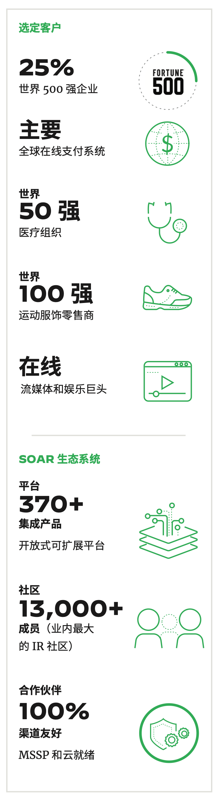
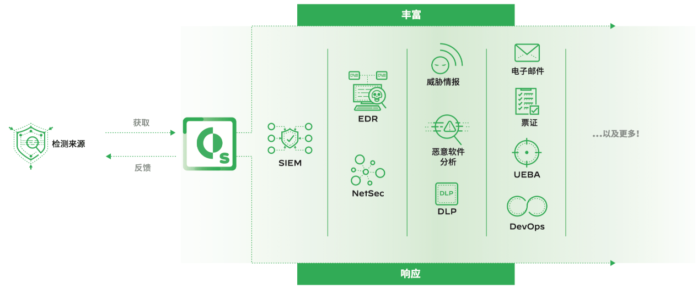
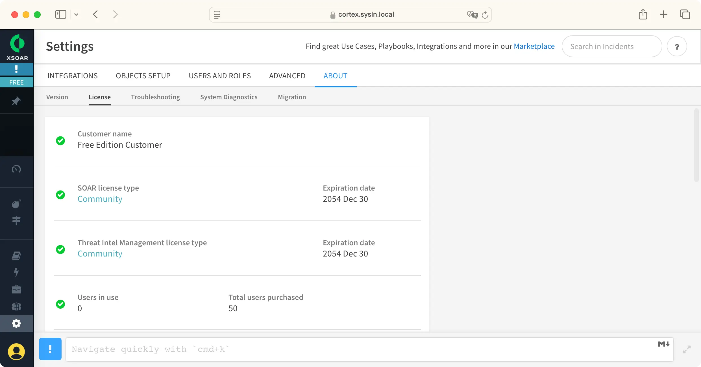

请访问原文链接：Palo Alto Cortex XSOAR 6.13 for Linux - 安全编排、自动化和响应 (SOAR) 平台 查看最新版。原创作品，转载请保留出处。
作者主页：sysin.org

重新定义安全编排和自动化
Cortex XSOAR 是一种综合安全编排、自动化和响应 (SOAR) 平台，能够统一案例管理、 自动化、实时协作和威胁情报管理，在整个事件生命周期内为安全团队提供支持。

SOAR 平台的主要新功能
安全编排
快速大规模地响应事件
- 集成了数百种产品
- 数千个自动化操作
- 直观的剧本编辑器
案例管理
获取、搜索和查询所有安全警报
- 自定义事件布局
- 自动记录
- 仪表盘和报告
协作与学习
通过协同工作 (sysin)，提高调查质量
- 虚拟战情室
- 调查界面
- 机器学习
威胁情报管理
分析、管理威胁情报并据其采取措施
- 威胁来源汇总
- 细化指标视图
- 情报共享与响应
Cortex XSOAR 的工作原理
Cortex XSOAR 从检测源（例如，安全信息和事件管理 (SIEM) 解决方案、网络安全工具、威胁情报源和邮箱）获取汇总的警报和威胁指标 (IOC)，然后执行基于流程的自动化剧本以实现丰富并响应事件 (sysin)。这些剧本跨技术、安全团队和外部用户进行协调，以集中可视化和处理数据。

安全运营中心
通过 Palo Alto Networks 的虚拟 SOC 之旅，深入了解安全运营。单击每个感兴趣的点，了解我们如何防止针对自己企业的网络攻击。
▶️ 点击观看视频演示
位于 Palo Alto Networks 的安全运营中心 (SOC) 的任务是保护我们在全球的 1 万名员工和不断扩展的 5 万个端点组成的网络。我们的 SOC 还监控我们的数据中心和全球 7.5 万个客户使用的安全服务。了解他们如何利用自动化，通过一个由 SOC 分析师组成的精干内部团队提供这些服务。
新增功能
Cortex Xsoar 结合了安全编排，事件管理和互动调查，以实现无缝体验。编排引擎旨在自动化安全产品任务并编织人类分析师任务和工作流程。
2024 年 10 月，版本 6.13
平台：
Cortex XSOAR 6.13 现在支持以下软件：
- Oracle Linux versions 8.9 and 9.3 (for engine and server installation)
- RHEL versions 8.10 and 9.4 (for engine and server installation)
- Elasticsearch versions 8.11, 8.12 and 8.13
- OpenSearch versions 2.10, 2.11, 2.12, 2.13, and 2.14
迁移：
使用可简化迁移过程的内置向导，将您的所有数据、配置和设置（包括指示器和事件）从 Cortex XSOAR 6.13 本地无缝迁移到 Cortex XSOAR 8 Cloud。
Cortex XSOAR 8 旨在提供提高的性能和可靠性。现在，它基于经过改进的云本地微服务体系结构而高度可扩展。 Palo Alto Networks 管理性能和扩展，使您能够专注于调查和响应。
修复：
21 项已知问题修复，限于篇幅，不在列出，详见官方文档。
系统要求
Operating Systems:
| Operating System | Supported Versions |
|---|---|
| Ubuntu | 18.04, 20.04 (OVF), 22.04 (OVF) |
| RHEL | 7.x, 8.x, 9.0-9.3 |
| Oracle Linux | 7.x, 8.9, 9.3 |
| Amazon Linux | 2 |
Hardware Requirements:
| Component | Dev Environment Minimum | Production Minimum |
|---|---|---|
| CPU | 8 CPU cores | 16 CPU cores |
| Memory | 16GB RAM | 32GB RAM |
| Storage | 500GB SSD | 1TB SSD with minimum 3k dedicated IOPS |
下载地址
历史版本：
- Palo Alto Networks Cortex XSOAR 6.10 for Linux, 2022-12
- Palo Alto Networks Cortex XSOAR 6.11 for Linux, 2023-04
Palo Alto Networks Cortex XSOAR 6.12 for Linux, 2023-09
- 百度网盘链接：https://pan.baidu.com/s/1_4QEoY8lFI8FSuJ0YRD3LA?pwd= <专享>
- 通过捐赠下载此版本：同下。
Palo Alto Networks Cortex XSOAR 6.13 for Linux, 2024-10
- 百度网盘链接：https://pan.baidu.com/s/1_4QEoY8lFI8FSuJ0YRD3LA?pwd= <专享>
- 通过捐赠下载此版本：点击 💙支付宝 或者 💚微信支付，扫码备注邮箱（用于识别注册用户，忘记备注请提供时间），
评论区留言指定版本（默认当前最新版），在其他平台留言恕无法处理。 - 提示：捐赠或赞赏属于自愿赠予行为，提交后即表示您对作者的支持与认可。为避免误操作，请在确认前仔细检查金额，支付完成后将无法撤销或退还。
License: Cortex XSOAR Community Edition, (General free usage) evaluates Cortex XSOAR for partner development.

相关产品：Palo Alto Cortex XSOAR 8.8 for ESXi - 安全编排、自动化和响应 (SOAR) 平台
更多：HTTP 协议与安全

文章用于推荐和分享优秀的软件产品及其相关技术，所有软件默认提供官方原版（免费版或试用版），免费分享。对于部分产品笔者加入了自己的理解和分析，方便学习和研究使用。任何内容若侵犯了您的版权，请联系作者删除。如果您喜欢这篇文章或者觉得它对您有所帮助，或者发现有不当之处，欢迎您发表评论，也欢迎您分享这个网站，或者赞赏一下作者，谢谢！
 支付宝赞赏
支付宝赞赏  微信赞赏
微信赞赏赞赏一下
敬请注册！点击 “登录” - “用户注册”（已知不支持 21.cn/189.cn 邮箱）。 请勿使用联合登录（已关闭）。